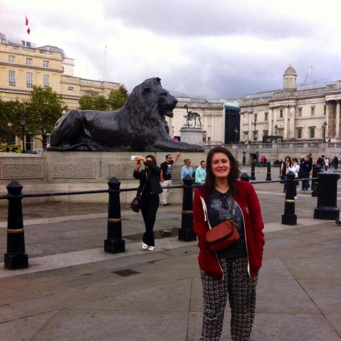
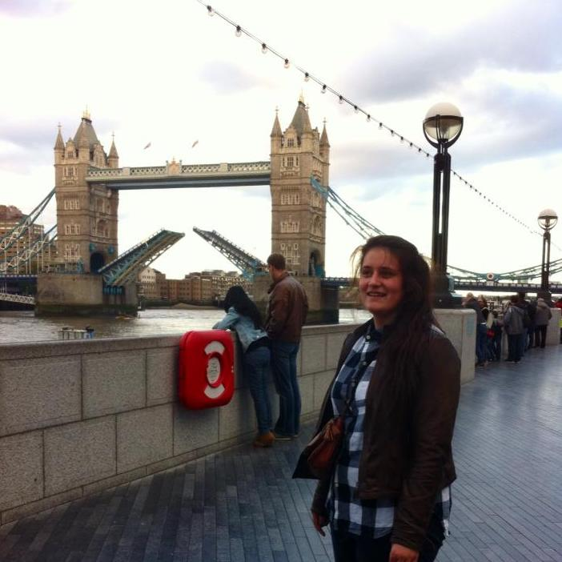

Hello, my name is Jelke, and I am a student in the advanced master's programme of Digital Humanities at KU Leuven. In my free time I enjoy playing the saxophone and the trombone, and I can often be found volunteering at Kwik Kwak, attempting to provide children with entertaining and amusing school vacations.
Before I started studying Digital Humanities, I obtained a Bachelor's and Master's Degree at the University of Antwerp. I completed the BA programme of Literature and Linguistics, specification Dutch and English. The MA programme I followed was that of Linguistics, specification Computational Psycholinguistics.

test